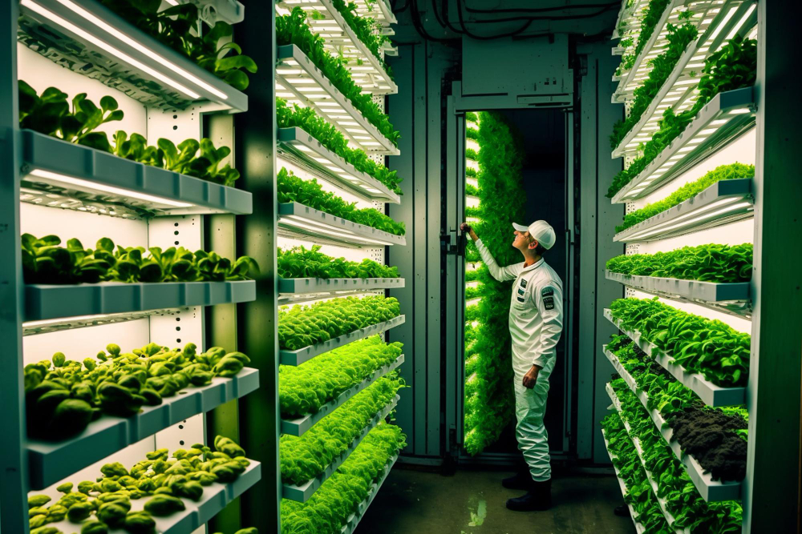
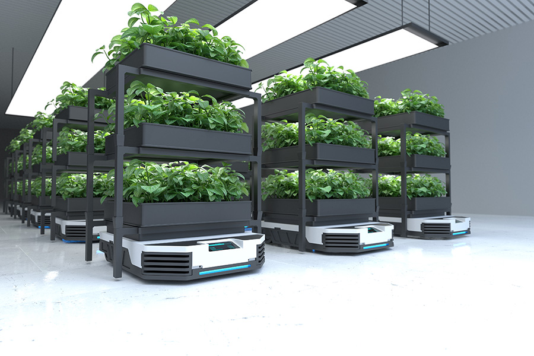
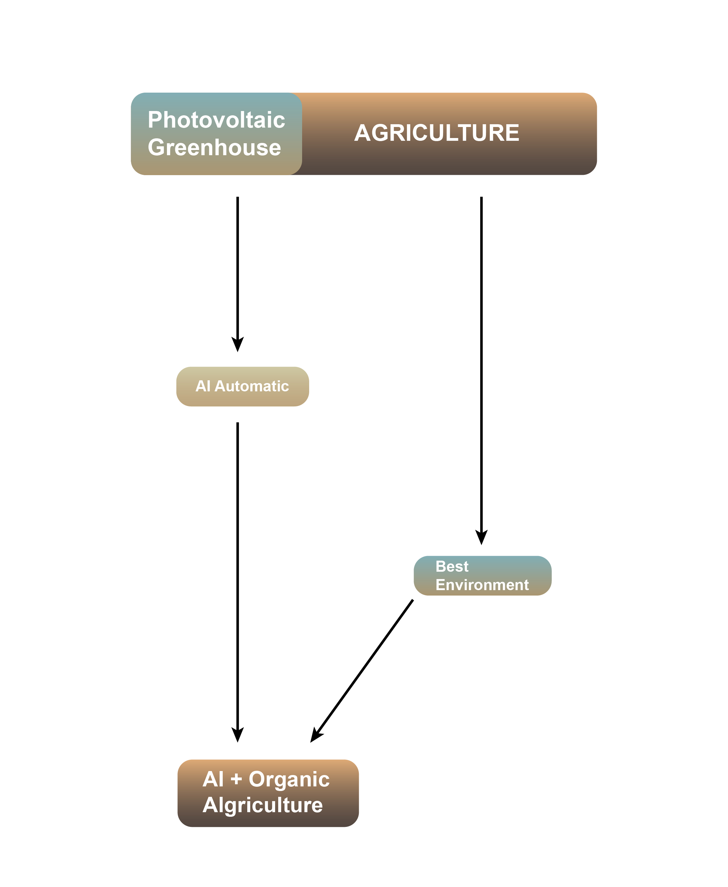
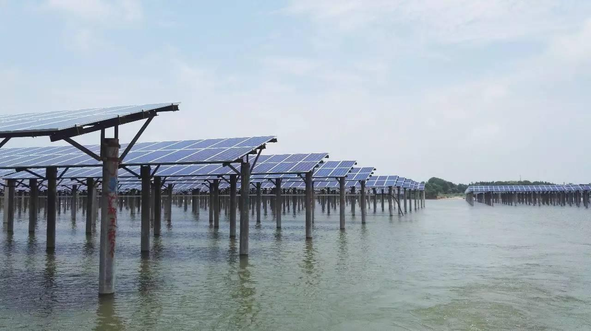

Agriculture
Solar Power Plant
Construct a 100 - 200 MW solar thermal power generation system, utilizing the height difference and land resources efficiently. Additionally, build N sets of 1000 square meter glass greenhouse photovoltaic power generation fields on the same plot.
Total estimated annual power generation: 390 million kWh - 750 million kWh.
Using the Dunhuang 100 MW molten salt tower solar thermal power plant as an example:
- Annual power generation: 390 million kWh
- Number of households supplied per year: 87,000
- Reduction of nitrogen oxides emissions: 5,000 tons
- Reduction of particulate matter emissions: 100,000 tons
- Reduction of sulfur dioxide emissions: 10,000 tons
- Reduction of carbon dioxide emissions: 350,000 tons
- Saving of standard coal: 130,000 tons
Rational Land Use and Utilization of Solar Thermal Power Plant Heat Energy: Establish an AI-integrated vertical photovoltaic organic agriculture park, consisting of N sets of 1000 square meters glass greenhouse photovoltaic fields. Extend the frost-free period to 365 days, effectively addressing the vegetable supply for medium-sized cities. This initiative is expected to create over a thousand job positions.



Project Planning Path
First, select the project proposal for the solar thermal power generation system in the appropriate and approved land to do CSP and the glass photovoltaic field combined with AIintegrated photovoltaic organic agriculture park.
Next, prioritize the development of a 200 MW molten salt tower solar thermal power plant, ensuring the rational use of land resources.
- Implement crowdfunding and international investment strategies.
- Enhance the integrated design of two power plants and one agricultural field, along with electrolytic green hydrogen energy.
- Initiate international bidding and commence construction.
- Complete crowdfunding for local and domestic glass greenhouse photovoltaic organic agriculture projects.
- Implement thermal pipeline installation in phases, installing glass greenhouse structures for vegetable production.
- Create over a thousand job positions in the project area.
- Establish a strong understanding of upstream supplier companies to establish an exclusive supply chain for the Solar Foundation and initiate merger and acquisition plans.
We will use the same designate a dedicated team have facilitated the implementation and site selection of the “ Three-in-One ” power plant projects in Oman, Saudi Arabia, Egypt, and other countries. Secure government subsidies, interest-free loans, tax exemptions, and judicial protection with preferential treatment.
Key factors for site selection include an annual solar radiation of over 3000 hours, flat land resources, proximity to ports, rivers, lakes, and oceans, and locations near the equator.
Animal Husbandry & Fishery
Best for Environment
High-quality grasslands and fish ponds can be cultivated by entirely using the vacant land area while also providing environmental greening.
200 MW molten salt tower solar thermal power plant project consists of a solar thermal power plant system, a photovoltaic glass power plant system, a high- temperature oxide electrolysis water hydrogen production system, a green hydrogen power generation system, and a photovoltaic AI organic vertical planting and aquaculture agricultural base.
